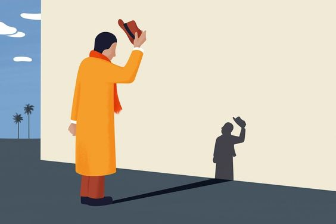

O avô de Machado de Assis foi escravo em uma chácara no morro do Livramento, no Rio de Janeiro, onde o escritor nasceu e foi batizado pela dona da casa, Maria José de Mendonça Barroso. Aliás, foi lá que ele aprendeu a ler.

Livros Traduzidos
Machado foi responsável por uma das primeiras traduções do conto O Corvo, de Edgar Allan Poe. O autor brasileiro falava francês — alguns acreditam que ele aprendeu a língua com um padeiro — e também traduziu Os Trabalhadores do Mar, de Victor Hugo.
Chefia na ABL
Foi um dos fundadores da Academia Brasileira de Letras (ABL) e ocupou a cadeira 23 — na época, a primeira cadeira foi designada a José de Alencar. Machado foi o primeiro presidente da instituição.
Fama de Bruxo
Foi apelidado pelos vizinhos de “Bruxo do Cosme Velho”, pois teria queimado cartas em um caldeirão em sua casa que ficava na Rua Cosme Velho. O apelido, entretanto, só pegou quando o poeta Carlos Drummond de Andrade fez o poema A um bruxo, com amor, que reverencia o escritor.
Diagnóstico Precoce
Em seu livro Anjo Rafael, Machado de Assis previu a existência da doença mental folie à deux (delírio a dois, em português) antes de ela ser descrita. A obra conta a história de uma filha que é “contagiada” pela loucura do pai, enlouquecendo também. Anos depois da publicação, o mal foi descoberto por pesquisadores. Como se não bastasse, o brasileiro também descobriu a cura para a doença: afastar a pessoa saudável de quem tem o problema mental.
Talento no xadrez
O autor era enxadrista e participou do primeiro campeonato brasileiro do esporte mental, ficando em terceiro lugar. As peças que utilizou estão expostas até hoje na Academia Brasileira de Letras.
Amor da vida
Ele foi casado por 35 anos com Carolina Machado, que era quatro anos mais velha, mas não tiveram filhos. Alguns especialistas dizem que Carolina era muito inteligente e ajudava na revisão dos textos. Com a morte da mulher, Machado entrou em profunda depressão e escreveu para o amigo Joaquim Nabuco: “Foi-se a melhor parte da minha vida, e aqui estou só no mundo”.
Gafe histórica
No prefácio da segunda edição de sua obra Poesias Completas, publicada em 1902, a palavra "cegara" foi substituída, na expressão “lhe cegara o juízo”, por um inusitado “cagara”. Calma, a história é ainda pior. Entenda aqui por que a gafe foi ainda maior. Diz a lenda que o próprio Machado teria participado de um mutirão para corrigir os exemplares antes de chegarem ao público. O que se sabe é que alguns escaparam e saíram com o erro.
Vários ofícios
Machado escreveu nove textos teatrais e foi crítico dessa forma de arte desde os 21 anos. Também trabalhou como jornalista e, no início da juventude, vendeu doces feitos pela madrasta e engraxou sapatos. Alguns especialistas acreditam que ele chegou a ser coroinha em uma igreja, mas não há confirmações.
Cargos públicos
Em 1888, foi condecorado pelo então imperador Dom Pedro 2º com a Ordem da Rosa e, meses depois, foi indicado para fazer parte da Secretaria da Agricultura. Anos mais tarde, chegou a ocupar o cargo de diretor-geral da viação da Secretaria da Indústria, Viação e Obras Públicas.
Luta
Era epilético e apresentava sinais de gagueira, o que contribuiu para formação de sua personalidade insegura e reclusa. Além disso, Machado de Assis, por ser mulato, enfrentou muito preconceito para conseguir reconhecimento.